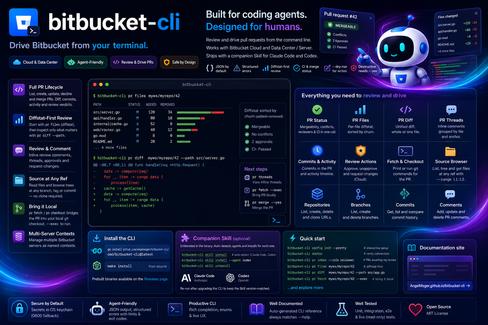

Drive Bitbucket from your terminal — built for coding agents, designed for humans.

Read repositories, drive PR review and merge — with output a coding agent can act on.
List, get, diff, comment, approve, decline and merge. Scoped reads — --scope summary|diff|commits|activity — let an agent load only what it needs.
Post inline comments with --inline path:line, reply with --reply-to; Cloud and Data Center anchor shapes hidden behind one flag.
Browse, search and query repositories; list and manage branches; print HTTPS / SSH clone URLs ready to paste into git clone.
Walk commit history with commit list, look up a single hash with commit get, or list what is reachable from to but not from with commit compare.
kubectl-style named contexts in one config file. Switch instance with --use-context; each context has its own credential.
JSON by default, with structured errors — categories, exit codes and recovery hints a coding agent can branch on.
Tokens live in the OS keychain, with a 0600 file fallback — never in the config file.
file list / get / tree read repository source at any branch, tag or commit — with optional line-range slicing. No local clone needed.
pr files returns per-file change summary; pr status aggregates mergeability, conflicts, reviewers and CI build status.
pr fetch / pr checkout print the equivalent git commands; --exec runs them in your current checkout for fast local review.
One flavor-agnostic client; the backend — Cloud (REST 2.0) or Data Center / Server (REST 1.0) — is detected automatically.
Install with npm, then finish setup in two steps — deploy the Skill, then turn on shell completion.
# recommended — fetches the prebuilt binary for your platform
npm install -g @angelmsger/bitbucket-cli
Other methods — go install, a source build, or a prebuilt binary from the
Releases page — are in the
installation guide.
Then finish setup:
A bitbucket Skill is embedded in the binary. It detects your coding agent — Claude Code, Codex — and installs for each:
$ bitbucket-cli skill installCompletes subcommands, flag values and live repository slugs. Load it once:
$ source <(bitbucket-cli completion bash)Set up a server, then review and merge from the terminal.
# interactive TUI setup, then verify connectivity $ bitbucket-cli config init --pretty $ bitbucket-cli doctor # browse and read PRs $ bitbucket-cli pr list --repo myws/myrepo --state OPEN $ bitbucket-cli pr get myws/myrepo/42 --scope summary $ bitbucket-cli pr get myws/myrepo/42 --scope diff # review and merge $ bitbucket-cli comment add --pr myws/myrepo/42 \ --inline src/server.go:142 \ --content "Hoist this allocation out of the loop?" $ bitbucket-cli pr approve myws/myrepo/42 $ bitbucket-cli pr merge myws/myrepo/42 --strategy squash --yes
Nine command groups. Every flag and example lives in the full CLI reference.
Full PR lifecycle plus diffstat, per-file diff, merge-readiness status, and local git fetch / checkout.
fileRead source at any branch / tag / commit — list, tree, and per-file get with optional line range.
repoBrowse, search, create and inspect repositories; print clone URLs.
commentPost general or inline PR comments; reply to threads; edit and delete.
branchList, get, create and delete branches in a repository.
commitShow a commit, walk history, or compare two refs.
configSetup wizard, plus multi-server context management.
authInspect and manage stored credentials.
doctorDiagnose configuration, credentials and connectivity.
Longer-form documentation, embedded as the companion Skill.
Configuration, env vars, auth schemes, multi-context setup.
The list → get → diff → comment → approve → merge decision tree.
General, inline and threaded review comments — Cloud and Data Center.
Structured error categories, exit codes, and recovery flows.
The bitbucket Skill that teaches a coding agent the CLI.